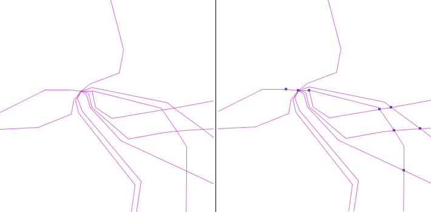
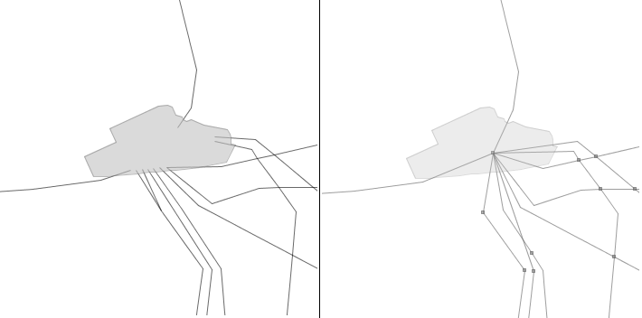
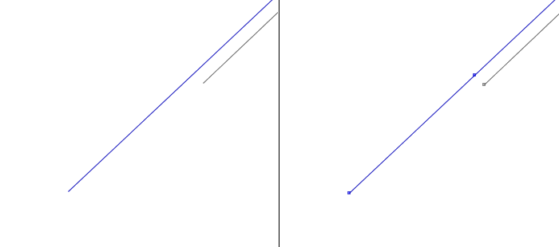
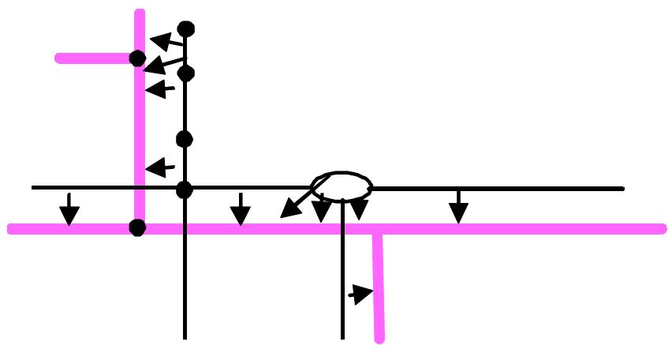
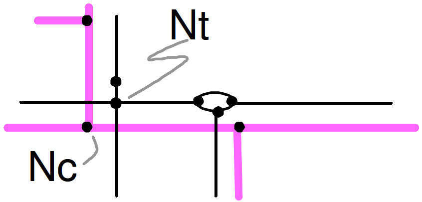
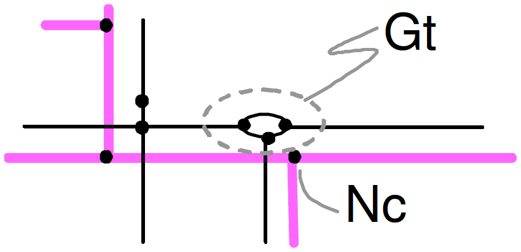
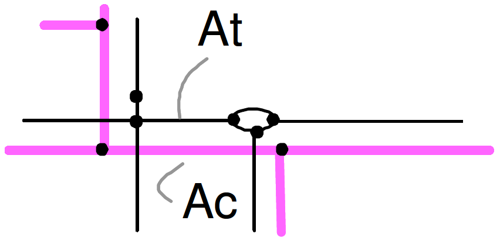

Appariement de réseaux
Le but de l’algorithme est d’apparier deux réseaux, en particulier si ils ont des niveaux de détail différents. Il prend en entrée deux ensembles de populations d’objets formant un réseau (des lignes et éventuellement des points), et fournit en sortie un ensemble de liens d’appariement entre les objets.
Package concerné : fr.ign.cogit.geoxygene.contrib.appariement.reseaux
<properties>
<project.build.sourceEncoding>UTF-8</project.build.sourceEncoding>
<geoxygene.version>1.7-SNAPSHOT</geoxygene.version>
</properties>
<dependencies>
<dependency>
<groupId>fr.ign.cogit</groupId>
<artifactId>geoxygene-contrib</artifactId>
<version>${geoxygene.version}</version>
</dependency>
</dependencies>
Lancement de l’algorithme
Le lancement de l’algorithme se fait à partir de la méthode AppariementDeJeuxGeo, de la classe AppariementIO..
Tous les paramètres de l’algorithme (des données à traiter, aux seuils de distance en passant par les options de prétraitement) doivent être définis avant de lancer cette méthode (création d’un objet de la classe ParametresApp).
La méthode renvoie un ensemble de liens de la classe EnsembleDeLiens du package appariement.
// Import des réseaux
IPopulation<IFeature> popRef = ShapefileReader.read("/home/glagaffe/reseau1.shp");
IPopulation<IFeature> popComp = ShapefileReader.read("/home/glagaffe/reseau2.shp");
// Paramètres par défaut
ParametresApp paramApp = new ParametresApp();
// On ajoute les réseaux
param.populationsArcs1.add(popRef);
param.populationsArcs2.add(popComp);
// Pour récupérer les cartes topos
List<ReseauApp> cartesTopo = new ArrayList<ReseauApp>();
// Lancement de l'appariement
EnsembleDeLiens edl = AppariementIO.appariementDeJeuxGeo(paramApp, cartesTopo);
// cartesTopo.get(0) : la carte topo du reseau le plus détaillé
// cartesTopo.get(1) : la carte topo du réseau le moins détaillé
Description de l’algorithme
La description du principe général de l’algorithme ci-dessous est issue de [Mustière 2006]. Pour une description plus fine, voir [Mustière et Devogele 2008]
Prétraitement
If the networks have very different structures, it is hard to directly compare them. We thus perform a pre-treatment of them, in order to give them a similar structure and to prepare the matching. Typical rep-treatment are mentioned below.
For both networks, our algorithm requires arcs and nodes, and topological relationships between them. But some of the networks only contain arcs and no explicit nodes. In this case, a first required pre-treatment is the creation of the graph structure (Figure 1). Different strategies are possible. The simplest one is to just create nodes at extremities of arcs and to compute topological relationships. In some cases, it may also be useful to fusion distinct but very close nodes coming from different arcs, in order to overcome topological problems in the data. Sometimes, it is also useful to build a planar graph from the arcs.
Figure 1 - Nodes are added at the extremities of electric lines
Another typical required pre-treatment is the transformation of connections. For example, modelling of connections of electric networks may be very different in some cases. In the example of Figure 2, we first transform the connections of the electric network to make them similar to classical graph structure: a node is created in the centre of each transforming station, and all lines entering in the station are connected to this node. Matching will after be done with this transformed network.
Figure 2 - Electric lines arriving in the transforming station are connected before matching.
In some cases, there also may exist important differences in the exact location of the extremities of the network. Classically, this appends for hydrographical and railway networks. In these cases we split arcs and add extra nodes to networks, by projecting extremities of one network on the other one (Figure 3).
Figure 3 - Networks may not stop at the same place: extra nodes are added before matching.
{kind=link}
{kind=link}
{kind=link}
Appariement
Once networks have been prepared, they can be matched. We briefly describe the main steps of the algorithm.
The first step is a pre-matching of nodes. For each node of the less detailed database (Net1), we look for close nodes in the other database Net2 candidate for matching.
The second step is a pre-matching of arcs. For each arc of Net1, we look for close arcs in Net2, candidate for matching (Figure 4). This pre-matching is based on the Hausdorf distance between lines.
Figure 4 - Pre-matching of arcs.
The third and most complex step is the actual matching of nodes. It is based on the combined analysis of the results of the two pre-matching steps.
We first look for 1-1 matching, i.e. one node of Net1 corresponding to one node of Net2. For each pair of nodes candidates for matching, we look if their respective connected arcs are also candidate for matching. When nodes and arcs matching are fully consistent, they are matched. For example, in Figure 5 the node Nc is matched to the node Nt because: 1/ these two nodes are candidate for matching, and 2/ all the 3 arcs connected to Nc are candidate for matching with arcs connected to Nt. This is the only case like that in the example.
Figure 5 - 1-1 node matching.
We then look for 1-n matching, i.e. one node of Net1 corresponding to several nodes and arcs of Net2. Without detailing this step, let’s say that its principle is to group nodes and lines of Net2. These groups are then considered as hyper-nodes in the network and managed like the nodes: we look for groups where pre-matching of nodes and arcs are consistent (Figure 6).
Figure 6 - A 1-n node matching.
Finally, the last step concern line matching. Once nodes of have been matched, we consider arcs of Net1 one by one, and each arc is matched to a set of arcs of Net2. Roughly speaking, this arc of Net1 is matched to the shortest path in Net2 linking the nodes matched to the extremities of the arc of net1 (Figure 7).
Figure 7 - Two arcs matched
{kind=link}
{kind=link}
{kind=link}
{kind=link}
Paramétrage
Avertissement
Le processus a de très nombreux paramètres (environ 40). Ceci s’explique par la diversité des prétraitements possibles, et par le fait que le processus est un outil de recherche, non encore complètement finalisé pour une mise en production. Cependant, ce nombre important de paramètre ne doit pas paraître un frein trop important à l’utilisation du processus. Tout d’abord, la plupart de ces paramètres sont inutiles en première approche, et servent à affiner précisément le processus in fine pour traiter les cas particuliers : on peut ainsi considérer que seuls 2 paramètres sont à fixer impérativement : la distance maximale attendue entre les objets, et la précision moyenne de la moins précise des bases. De plus, les paramètres sont organisés en différents groupes pour simplifier leur détermination. Enfin, tous les paramètres sont décrits en détail dans l’API, et ont une valeur par défaut.
Nous donnons ici quelques grandes lignes pour guider le paramétrage.
Généralités sur les paramètres
De manière générale, le réseau le moins détaillé est appelé réseau1, et le plus détaillé est appelé réseau 2.
On distingue parmi les paramètres,
- les paramètres essentiels qui spécifient quelles données traiter et les seuils de distance à utiliser,
- les paramètres secondaires qui permettent de raffiner le processus et la forme des résultats et qui peuvent en première approximation être laissés à leurs valeurs par défaut.
Les paramètres essentiels
Ces paramètres essentiels sont de deux types :
- Les paramètres qui spécifient quelles données traiter.
- Leur nom commence par population.
- Chaque réseau à traiter peut être constitué à partir d’un ou plusieurs ensembles d’objets avec une géométrie linéaire (les futurs arcs du réseau, par exemple une classe de tronçons de route et une classe de tronçons de chemin si on veut les traiter ensemble), ainsi qu’un ou plusieurs ensembles d’objets ponctuels (les futurs noeuds du réseau, comme une classe de carrefours ou de gares). Si il n’y a pas d’objet ponctuel, des noeuds seront créés automatiquement pour le calcul, mais aucun résultat ne sera ressorti sur ces noeuds.
- Un paramètre particulier, populationsArcsAvecOrientationDouble, spécifie si les réseaux sont orientés (ex : hydrologie) ou non (ex : lignes électriques)
// Réseau le plus détaillé
param.populationsArcsAvecOrientationDouble1 = true;
param.attributOrientation1 = "sens";
Map<Object, Integer> orientationMap1 = new HashMap<Object, Integer>();
orientationMap1.put("Direct", 1);
orientationMap1.put("Inverse", -1);
orientationMap1.put("Double", 2);
// Réseau le moins détaillé
param.populationsArcsAvecOrientationDouble2 = false;
- Les paramètres qui fixent les seuils de distance pour la recherche des objets à
apparier (écarts maximaux supposés entre les objets homologues).
- Leur nom commence par distance.
- Les distances maximales entre noeuds et arcs (distanceNoeudsMax et distanceArcsMax), doivent de l’ordre des écarts maximaux espérés entre les réseaux (typiquement, ce peut être égal à deux fois la somme des précisions moyenne des bases). Il est conseillé en première approximation de donner la même valeur à ces deux paramètres. En cas d’hésitation, il est conseillé de mettre des paramètres plutôt trop pessimistes (trop forts) plutôt que trop optimistes.
- Un autre paramètre, distanceArcsMin, est plus difficile à appréhender. Il peut être fixé en première approximation à la précision moyenne de la moins précise des bases.
- Un dernier paramètre, distanceNoeudsImpassesMax, permet de raffiner le traitement des impasses et ne doit pas être utilisé en première approximation.
param.distanceArcsMax = 50;
param.distanceArcsMin = 10;
param.distanceNoeudsMax = 25;
param.distanceNoeudsImpassesMax = -1;
Les paramètres secondaires
Ces paramètres secondaires précisent les prétraitements à réaliser, la forme des exports, et permet de lancer diverses variantes du processus. On distingue :
- Ceux qui spécifient les pré-traitements topologiques.
- Leur nom commence par topologie.
- Ces paramètres permettent de rendre le graphe planaire, de corriger les erreurs de topologie aux connections, etc.
- IMPORTANT : L’appariement requiert des réseaux avec une topologie propre, ce qui explique l’intérêt de ces paramètres. Mais autant que possible, nous conseillons de faire ce nettoyage topologique a priori avant le traitement (dans un SIG classique du marché par exemple, qui sera plus optimisé pour faire cela que GeOxygene), et ensuite de ne pas utiliser ces paramètres.
param.topologieGraphePlanaire1 = true;
param.topologieFusionArcsDoubles1 = true;
param.topologieSeuilFusionNoeuds1 = -1;
param.topologieElimineNoeudsAvecDeuxArcs1 = false;
param.topologieGraphePlanaire2 = true;
param.topologieFusionArcsDoubles2 = false;
param.topologieSeuilFusionNoeuds2 = -1;
param.topologieElimineNoeudsAvecDeuxArcs2 = false;
- Ceux qui spécifient les pré-traitements « de projection ».
- Leur nom commence par projete.
- Dans certains cas, un redécoupage des réseaux en projetant les noeuds d’un réseau sur l’autre réseau peuvent être utiles (voir exemple Figure 3), en particulier si les données ont des niveaux de détail proche. Ce sont ces paramètres qui guident cela. Ils vont néanmoins un peu à l’encontre de la philosophie générale du processus la plupart du temps. Nous conseillons donc de ne pas les utiliser en première approximation.
param.projeteNoeuds1SurReseau2 = false;
param.projeteNoeuds1SurReseau2DistanceNoeudArc = 0;
param.projeteNoeuds1SurReseau2DistanceProjectionNoeud = 0;
param.projeteNoeuds1SurReseau2ImpassesSeulement = false;
param.projeteNoeuds2SurReseau1 = false;
param.projeteNoeuds2SurReseau1DistanceNoeudArc = 0;
param.projeteNoeuds2SurReseau1DistanceProjectionNoeud = 0;
param.projeteNoeuds2SurReseau1ImpassesSeulement = false;
- Ceux qui fixent diverses variantes du processus, créées au fur et à mesure de
besoins ponctuels.
- Leur nom commence par variante.
param.varianteForceAppariementSimple = false;
param.varianteRedecoupageArcsNonApparies = false;
param.varianteRedecoupageNoeudsNonApparies = false;
param.varianteRedecoupageNoeudsNonApparies_DistanceNoeudArc = 100;
param.varianteRedecoupageNoeudsNonApparies_DistanceProjectionNoeud = 50;
param.varianteFiltrageImpassesParasites = false;
param.varianteChercheRondsPoints = false;
- Ceux qui permettent de débuguer les traitements.
- Leur nom commence par debug.
- Ils permettent essentiellement de fixer l’aspect graphique des liens d’appariement trouvés, ainsi que l’affichage du texte pendant le calcul.
param.exportGeometrieLiens2vers1 = true;
param.debugAffichageCommentaires = 1;
param.debugBilanSurObjetsGeo = true;
param.debugTirets = true;
param.debugPasTirets = 50;
param.debugBuffer = false;
param.debugTailleBuffer = 10;
Autour de l’appariement de réseaux
D’autres outils sont disponibles autour de l’appariement de réseaux, certains pour évaluer les écarts entre deux réseaux (classe Comparaison), d’autres pour recaler un réseau sur un autre après l’appariement (classe Recalage). Cette bibliothèque d’outils est embryonnaire et demande à être testée et étendue : il faut utiliser ces outils avec précaution car ils n’ont pas été testés intensément et ils ont été conçus pour des cas relativement simples.
// Liens génériques
EnsembleDeLiens liensGeneriques = LienReseaux.exportLiensAppariement(liens, cartesTopo.get(0), param);
// Recalage
CarteTopo reseauRecale = Recalage.recalage(cartesTopo.get(0), cartesTopo.get(1), liensGeneriques);
Références
- [Mustière et Devogele 2008] : Mustière S., Devogele T., 2008, Matching networks with different levels of detail , GeoInformatica, Vol.12 n°4, pp 435-453
- [Devogele 1997] : Devogele T. 1997. Processus d’intégration et d’appariement de bases de données Géographiques. Application à une base de données routières multi-échelles, PhD Thesis, University of Versailles.
- [Devogele, Trévisan et Raynal 1998] : Devogele T., Trévisan J.,, Raynal L. 1998. Building a multi-scale database with scaletransition relationships. Advances in GIS research II, Proceedings of 7th International Symposium on Spatial Data Handling, pp.337-351.
- [Mustière 2006] : Mustière S. 2006. Results of experiments on automated matching of networks., Proceedings of the ISPRS Workshop on Multiple Representation and Interoperability of Spatial Data, Hanover, February 2006, pp.92-100